Pot exista momente în care documentele dvs. au mai multe obiecte, cum ar fi imagini, forme și casete de text.
Puteți aranja obiectele în orice fel doriți, aliniindu -le, grupând, ordonând și rotindu-le în diferite moduri.
-
Țineți apăsată tasta Shift (sau Ctrl) și faceți clic pe obiectele pe care doriți să le aliniați.
În exemplul nostru, vom selecta cele patru forme din dreapta.
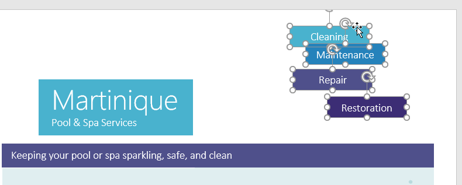
-
Din fila Format, faceți clic pe comanda Aliniere, apoi selectați una dintre opțiunile de aliniere. În exemplul nostru, vom alege Align Right.
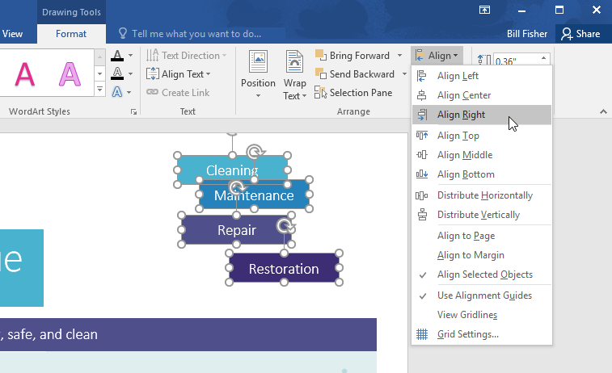
-
Obiectele vor fi aliniate în funcție de opțiunea selectată. În exemplul nostru, formele sunt acum aliniate unele cu altele.
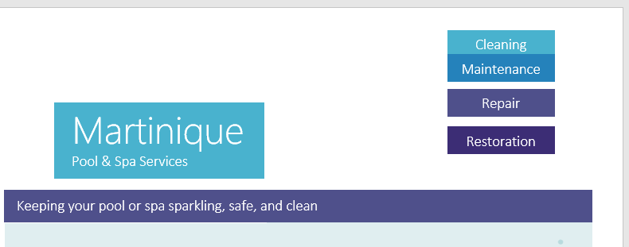
Dacă v-ați aranjat obiectele într-un rând sau coloană, vă recomandăm să fie la o distanță egală unul de celălalt pentru un aspect mai ordonat.
Puteți face acest lucru distribuind obiectele orizontal sau vertical.
-
Țineți apăsată tasta Shift (sau Ctrl) și faceți clic pe obiectele pe care doriți să le distribuiți.
-
În fila Format, faceți clic pe comanda Aliniere, apoi selectați Distribuire orizontală sau Distribuire verticală.
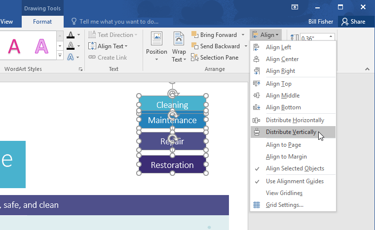
-
Obiectele vor fi distanțate uniform unul de celălalt.
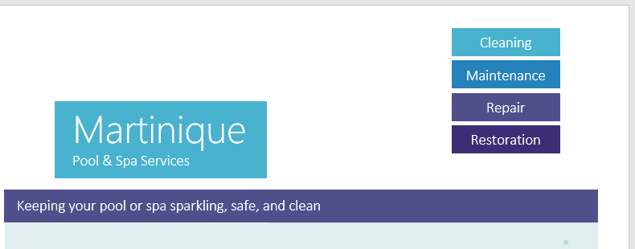
Uneori, este posibil să doriți să grupați mai multe obiecte într- un singur obiect, astfel încât acestea să rămână împreună. Acest lucru este de obicei mai
ușor decât selectarea lor individuală și, de asemenea, vă permite să redimensionați și să mutați toate obiectele în același timp.
-
Țineți apăsată tasta Shift (sau Ctrl) și faceți clic pe obiectele pe care doriți să le grupați.
-
Faceți clic pe comanda Grup din fila Format, apoi selectați Grup.
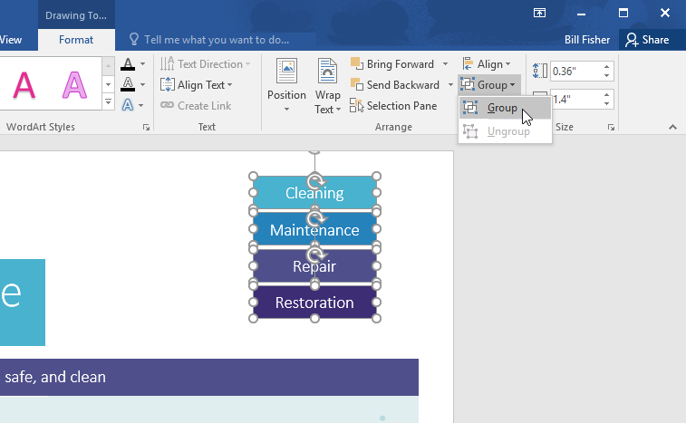
-
Obiectele selectate vor fi acum grupate. Va exista o singură cutie cu mânere de dimensionare în jurul întregului grup,
astfel încât să puteți muta sau redimensiona toate obiectele în același timp.
-
Selectați obiectul grupat. Din fila Format, faceți clic pe comanda Grup și selectați Degrupare.
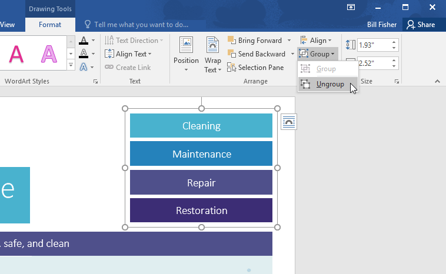
-
Obiectele vor fi negrupate.
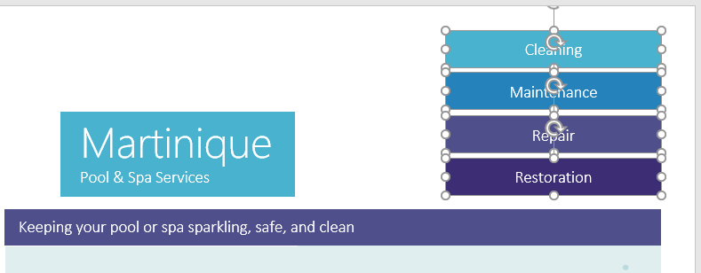
Pe lângă alinierea obiectelor, Word vă oferă posibilitatea de a aranja obiectele într-o anumită ordine.
Ordonarea este importantă atunci când două sau mai multe obiecte se suprapun, deoarece determină care obiecte sunt în față sau în spate.
Obiectele sunt plasate pe diferite niveluri în funcție de ordinea în care au fost introduse într-un document.
În exemplul de mai jos, dacă mutăm imaginea undelor la începutul documentului, aceasta acoperă mai multe dintre casetele de text.
Acest lucru se datorează faptului că imaginea se află în prezent la cel mai înalt nivel.
Cu toate acestea, îi putem schimba nivelul pentru a-l pune în spatele celorlalte obiecte.
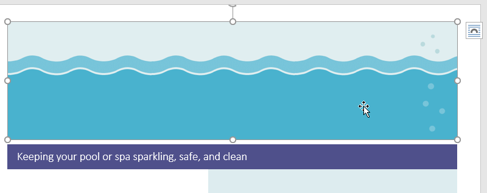
-
Selectați obiectul pe care doriți să îl mutați. În exemplul nostru, vom selecta imaginea undelor.
-
Din fila Format, faceți clic pe comanda Aduceți înainte sau Trimiteți înapoi pentru a modifica ordinea obiectului cu un nivel.
În exemplul nostru, vom selecta Trimitere înapoi.
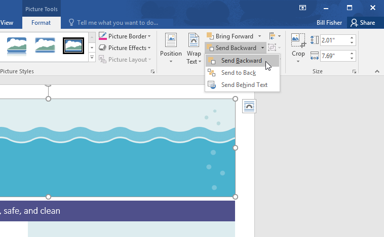
-
Obiectele vor fi reordonate. În exemplul nostru, imaginea se află acum în spatele textului din stânga, dar încă acoperă formele din dreapta.
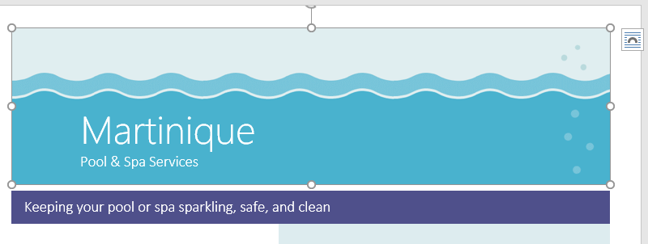
-
Dacă doriți să mutați un obiect în spatele sau în fața mai multor obiecte,
este de obicei mai rapid să utilizați Aduceți înainte sau Trimiteți înapoi în loc să faceți clic pe cealaltă comandă de ordonare de mai multe ori.
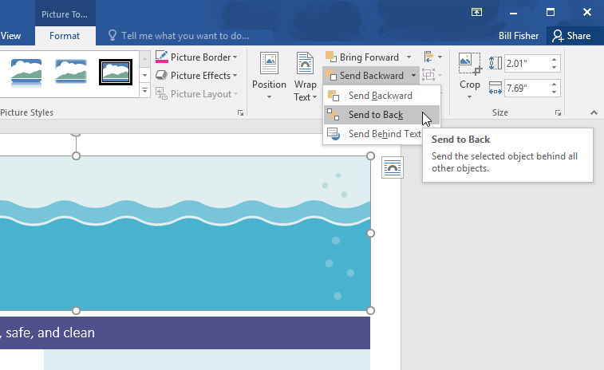
-
În exemplul nostru, imaginea a fost mutată în spatele tuturor celorlalte elemente de pe pagină, astfel încât toate celelalte texte și forme sunt vizibile.
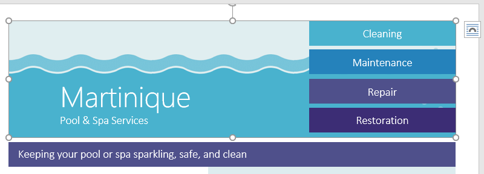
Dacă trebuie să întoarceți un obiect astfel încât să fie orientat într-o direcție diferită,
îl puteți roti la stânga sau la dreapta sau îl puteți întoarce orizontal sau vertical.
-
Cu obiectul dorit selectat, faceți clic pe comanda Rotire din fila Format, apoi alegeți opțiunea de rotație dorită. În exemplul nostru, vom alege Flip Horizontal.
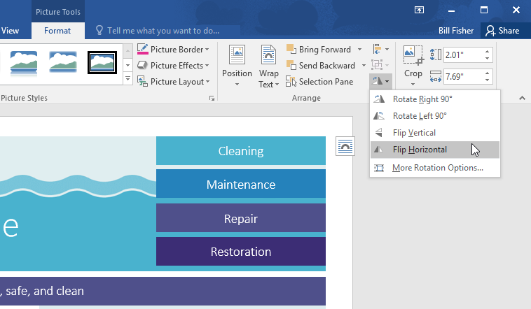
-
Obiectul va fi rotit. În exemplul nostru, acum putem vedea bulele din stânga care au fost ascunse anterior în spatele casetelor de text.
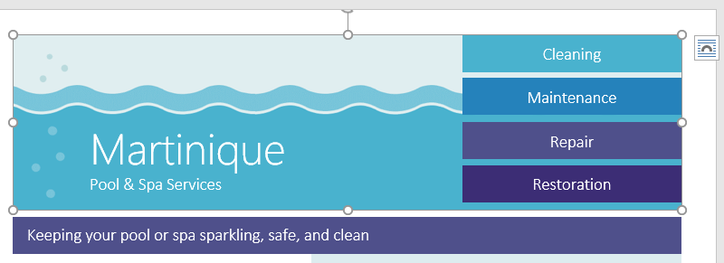